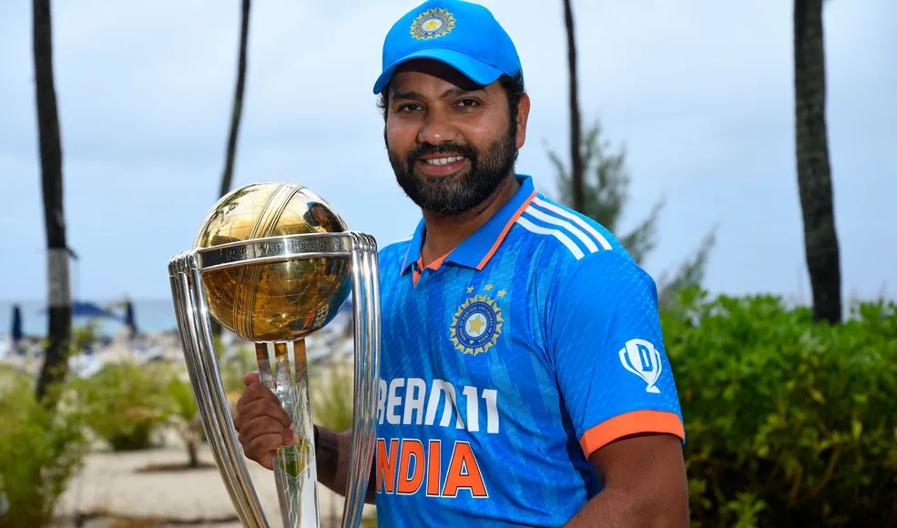
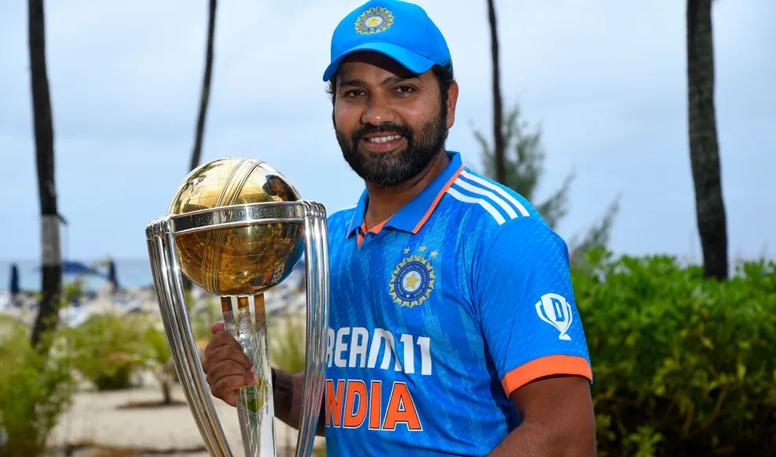
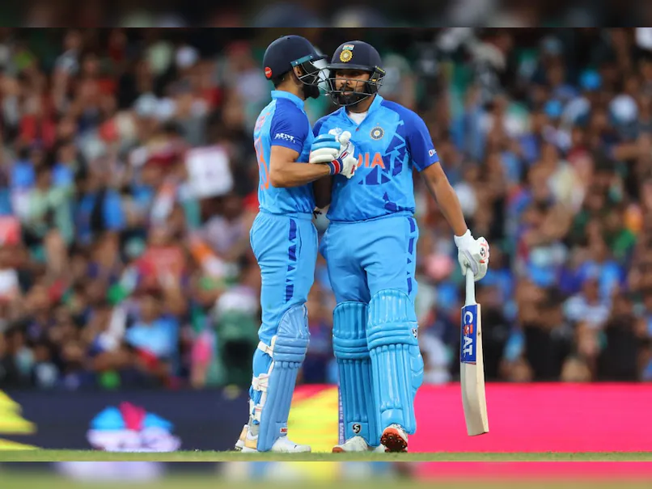
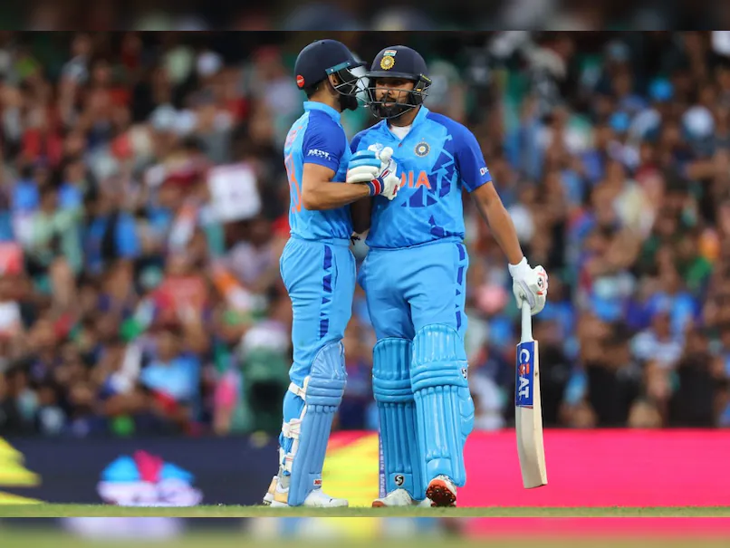

Rohit Gurunath Sharma(born April 30, 1987, Bansod, India) is an Indian international cricketer and the current captain of the Indian cricket team in all three international formats—Test cricket, One-Day International (ODI), and Twenty20 International (T20I). Sharma also captained the Mumbai Indians, a franchise team in the Indian Premier League (IPL), for 10 years and led them to five titles. Sharma is known for his batting prowess and is nicknamed “Hitman” by his fans. He is also an occasional off-spinner.
Sharma is the only player to have scored three double hundreds in ODI cricket; no other player has scored even two. He also holds the record for most international sixes across all formats, most sixes in World Cups, and the highest individual score in an ODI. He was a member of the Indian sides that won the 2007 T20I World Cup and the 2013 ICC (International Cricket Council) Champions Trophy.
Sharma was born on April 30, 1987, in Bansod, Nagpur, in the state of Maharashtra, India. He first joined a cricket camp in 1999, when coach Dinesh Lad, a friend of his uncle's, noticed his talent. Lad used to scout for talent in those days and was very impressed with the way Sharma bowled. Knowing that Sharma,s uncle would not be able to afford the fees for the school where Lad was coach, Lad convinced the school's director to accept Sharma as a student and waive his entire fee so that he would have access to good training facilities. Sharma started off as a spinner before focusing on batting.
Sharma made his senior-level debut in a List A game in 2006, scoring an unbeaten 31 for West Zone against Central Zone in the Deodhar Trophy. His run of scores in the tournament got him picked for the India A squad, and he made his first-class debut for India Athat team against New Zealand at Darwin later in 2006, scoring 57 and 22, respectively. India achieved a 3-wicket win over New Zealand. He subsequently made his Ranji Trophy debut for Mumbai, one of the leading (and hard to break into) teams in the Indian domestic circuit, in the 2006-07 season and impressed with a double hundred while playing against Gujarat, as well as a half-century in a winning cause in the final that year. Sharma has gone on to represent Mumbai throughout his first-class career.
IPL Career
Captain Marvellous. Rohit Sharma has etched his name as the most successful captain in the IPL with five trophies, the most by anyone in the tournament. He has cracked the code and made MI the most consistent team. A prolific run-getter, the Hitman is one of the most naturally gifted batsmen in the world and has been enjoying a tremendous run with the bat. When it comes to the shorter format, there are few who can match his striking abilities. Rohit proved why he is regarded as a special talent when he became the first batsman to strike two double centuries in the ODIs and he now has three. He was one of the most consistent Deccan Chargers batsmen in the first three seasons of the IPL and was instrumental in his former franchise winning the crown in 2009 However, since 2011, Rohit has been an integral part of the Mumbai Indians guiding their batting line-up.
He took over the team's captaincy a couple of games into the 2013 season and led MI to their maiden IPL title. In the same year, MI also completed a grand double when they clinched the Champions League T20 title. His captaincy was put to test in the 2015 season after the team won just one of their first six games and were struggling to stay afloat. Mumbai Indians then staged a remarkable turnaround and lifted the Trophy for the second time with a convincing win in the final. Rohit, who made a half-century, was named the Player of the Match. The legacy of Hitman expanded further on, after powering Mumbai Indians to title victories in the 2017 and 2019 seasons, both being last ball thrillers. Rohit led the Mumbai Indians to a successful campaign in the 2020 season, which was their second consecutive title
International Career
Sharma's international career kicked off with an ODI match against Ireland at Belfast in June 2007, when he took one catch but did not get a chance to bat or bowl. His T20I debut was later the same year, in the group game against England in the first T20I World Cup. Again, he didn,t get a chance to bat or bowl but took one catch, in a match remembered for Yuvraj Singh's six sixes in an over. Sharma was Player of the Match in the quarterfinals against South Africa. He was also part of the team that won the T20I World Cup final, scoring a quick 30, the second highest score for India. Sharma scored his first ODI half-century in November 2007 and had a run of good scores in the 2007-08 ODI series in Australia, which India won. He scored two ODI hundreds in 2010 but subsequently had a loss of form and fitness, which led to him being dropped from the eventually victorious 2011 ODI World Cup team. His loss of form continued for a couple of years, and he continued to be in and out of the team.
It was in 2013 that the captain, Mahendra Singh Dhoni, promoted Sharma as opener, a position at which he has been a success. His partnership with Shikhar Dhawan at the top of the order has yielded great results for India. He scored his first ODI double hundred against Australia the same year and followed it up with a second double hundred against Sri Lanka in 2014. The latter score of 264 remains an ODI record for highest individual score. Sharma made his Test debut in 2013, scoring 177 against West Indies in Kolkata, in Sachin Tendulkar,s farewell series. He was, however, unable to hold his position in the Test team for a few years after a run of poor scores in overseas Test matches. In 2015 Sharma scored a T20I hundred against South Africa at Dharamshala, India, becoming the second Indian to score a hundred in all three international formats. In 2017 he scored a T20I hundred against Sri Lanka at Indore in only 35 balls, equaling David Miller,s record for the fastest T20I hundred. He was also part of the ODI World Cup team that year for the first time and scored one century as India made it to the semifinals.
In 2017, when Virat Kohli, captain on the Indian ODI team at that time, was rested, Sharma was appointed captain of the ODI team in a series against Sri Lanka. He led India to victory and scored his third ODI double hundred. The 2019 ODI World Cup, where India made it to the semifinals, saw Sharma in a rich vein of form. He scored five centuries, the most in a single World Cup edition, and led the run charts. He was also vice captain during the tournament. The year also saw Sharma play the opening batsman role in Tests for the first time; he scored two hundreds in a match against South Africa. Sharma was appointed vice captain of the Test team during the 2020 series in Australia and scored critical runs in a series India won. He continued to score heavily in the 2021 twin series against England. In February 2022 he was appointed captain of the Indian team in all three formats.
In the 2023 ODI World Cup, Sharma led the Indian team to a clean sweep in the league phase and, in the process, set a record for the most hundreds and the most sixes in ODI World Cup history.
- Sharma clinched the world record for the highest ever individual score in a one-day international match, with a remarkable 264 against Sri Lanka at Eden Gardens, Kolkata, on 13 November 2014.
- He is the only player to have scored three double-centuries in this form of international cricket
- In January 2020, Sharma was named as the ODI Player of the Year by the International Cricket Council
- During the 2019 World Cup, Sharma became the only batsman to scored five centuries in a single edition of the Cricket World Cup.
- On 5 October 2019, during a Test match against South Africa, Sharma became the first batsman to score two centuries in a match on his first appearance as an opening batsman
- On 11 October 2023, Sharma achieved a historic feat during the 2023 Cricket World Cup match against Afghanistan team, when he surpassed the record previously held by Chris Gayle for the most international sixes (553).His powerful and elegant batting style, coupled with his consistency, allowed him to reach this milestone with 556 sixes, overtaking Gayle's record
- On 14 October 2023, Sharma achieved a milestone in the world of cricket by becoming the first Indian to complete 300 sixes in the 50-overs format
- In November 2020, Rohit Sharma became the fastest player to reach 6,000 runs as an opening batsman in ODIs. He achieved this milestone in just 137 innings, surpassing the previous record held by legendary Indian cricketer Sachin Tendulkar.
- He became the first Indian batter to smash 50 One Day International (ODI) sixes in a single calendar year.
- Five-time IPL Champion as Captain: Rohit Sharma has led the Mumbai Indians (MI) to five IPL titles (2013, 2015, 2017, 2019, and 2020), making him the most successful captain in the history of the tournament.
- Most Wins as Captain: Under Rohit Sharma's leadership, MI has recorded the highest number of wins, establishing a record of consistent performance.
- Over 5,000 Runs in IPL: Rohit Sharma is one of the few players who have scored over 5,000 runs in the IPL, showcasing his batting prowess and consistency.
- Rohit Sharma holds the record for hitting the most sixes by an Indian player in the IPL
- Rohit Sharma is one of the few players to have taken a hat-trick and century in the IPL
- 2015 - Arjuna Award
- 2020 - Major Dhyan Chand Khel Ratna
- ICC Men's ODI Cricketer of the Year in 2019
- ICC Men's ODI Team of the Year in 2014 and in each year from 2016 to 2019
- ICC Men's Test Team of the Year in 2021
- 2015 Winner GQ India Man Of The Year Sportsman of the Year

 

 
